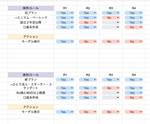
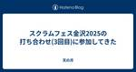
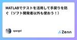
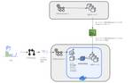
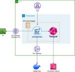
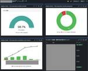
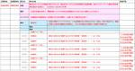
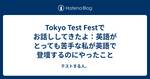
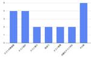
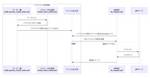

直近1週間の更新
12/22 (日)

新卒QAのすゝめ QA - freee Developers Hub
こんにちは。QAエンジニアをしているinachanです。 フリー以外のサービスと連携するプロダクトの一員としてQAをしています。 freee QA Advent Calendar2024 22日目です。 はじめに 私はfreee初の新卒QAエンジニアとして入社しました。QAの新卒として入ってきたのは私と12月10日のアドベントカレンダーを担当しているtonchanの2人です。 そして7月にフリー以外のサービスと連携するプロダクトにアサインされた新米QAです〜。 QAのことはもちろん、自分なりの発見をまとめていこうかなと思います。 なぜ最初のキャリアとしてQAを選んだのか そもそもQAエンジニア…
6分前
12/21 (土)

スクラムフェス金沢2025の打ち合わせ(3回目)に参加してきた 天の月
aki-m.hatenadiary.com スクラムフェス金沢2025に向けた準備をしてきたので、会の様子と感想を書いていこうと思います。 会場決め ランチ 会場予約 開催趣意書修正 スタッフミーティングの日程 会場決め 会場はITビジネスプラザ武蔵でいいという話があったのですが、開場が10時ということだけが懸念だという話が出ました。ただ、他にいい場所があるかという話もありますし、少し後ろ倒しするくらいなら問題ないのでは？ということで、ITビジネスプラザ武蔵になりました。 ランチ 前回ごみの回収が大変だった*1という問題があったので、ランチはそれぞれが食べにいく形がいいのではないか？という話に…
2時間前
USDM-22. 要求IDと仕様ID Kouichi Akiyama
2024年のアドカレです。 前回は「カテゴリ名とは大きな要求漏れを防ために、システムの世界を機能や構成で分割して名前を付けたもの」という話を書きました。 続きをみる
2時間前
コードの内部品質を高める動きをチームに浸透させたい Zennの「品質」のフィード
こんにちは、モバイルエンジニアのころむにーです。 普段、モバイルアプリを通じたユーザーへの価値提供を目指すプロジェクトに、技術リードという立場で参加しています。 本記事では、コードの内部品質について、私が直近のプロジェクトで取り組んできたことをまとめました。 背景 プロダクトで継続的に価値を提供していくために、コードの内部品質を高く保つのは重要です。 内部品質は目に見えにくく定量的な成果が出にくいものであるものの、中・長期的にビジネスの成長に大きく影響してきます。 https://mtx2s.hatenablog.com/entry/2023/04/26/230917 私がジョインし...
13時間前
QAがスナップショットテストを書いてみた話 QA - freee Developers Hub
こんにちは、freee人事労務でQAエンジニアをしているkairiです。freee QA Advent Calendar2024 21日目です。 今回はプロジェクトの中で実際にあった、不足しているテスト（自動テスト）をQAが書いてサポートした事例、およびそこからシステムの内部構造に踏み込んだ改善提案をした事例を紹介します。 きっかけ 複雑な表示ロジックを持つUIのリファクタに関わることになった際に、パターンが多すぎて目でチェックすることが非効率に感じたことがあり、なんとか楽ができないかと考えました。 実際のデシジョンテーブル。ほんの小さなコンポーネントに対してこの複雑度。 しかし該当箇所には複…
14時間前
オニオンアーキテクチャにおけるテストコーディングガイド 23Zennの「Test」のフィード
23Zennの「Test」のフィード
! この記事は 株式会社ログラス Productチーム Advent Calendar 2024 のシリーズ 2、21日目 の記事です。 はじめに アドベントカレンダーも終盤に差し掛かってきましたね！ シリーズ2ではテストコードについて書こうと思います。 ここ2年間くらいで採用やイベントを通じて色々な会社のエンジニアとお話させてもらった中で、テストコードの書き方にはかなりブレがあるように感じました。 ユニットテストについてはあまりブレがなく、どの方もドメイン層のEntityやValueObjectについて網羅的に書きましょうとなっていました。 一方で、インテグレーションテストにつ...
16時間前
12/20 (金)
クラウドセキュリティを再吟味するために〜実例から学ぶ、考慮すべき観点とその対策事例〜に参加してきた 天の月
https://findy.connpass.com/event/337675/ こちらのイベントに参加してきたので、会の様子と感想を書いていきます。 会の概要 会の様子 Snykで始めるセキュリティ担当者とSREと開発者が楽になる脆弱性対応 マルチプロダクト開発の現場でAWS Security Hubを1年以上運用して得た教訓 ガバメントクラウドから考えるクラウドセキュリティ 10分で学ぶKubernetesコンテナセキュリティ 会全体を通した感想 会の概要 以下、イベントページから引用です。 セキュリティインシデントが相次ぐ昨今、その対策の重要性が非常に高まっています。中でもクラウドについ…
1日前

MATLABでテストを活用して手戻りを防ぐ（ソフト開発者以外も使おう！） Zennの「Test」のフィード
Advent Calender 2024の12/10枠です． MATLABネタが降ってきたので書こうと思ったら枠が空いていましたので投稿します．（本記事を書いているのは12/20です） https://qiita.com/advent-calendar/2024/matlab はじめに 最近MATLABのテスト機能を使ってみたら助けられることが多くありましたので，使い方を備忘もかねてまとめておきます． 気軽にシンプルに使うためになるべく高度なことはしません．単体の関数やスクリプトを対象とするユニットテストのみです．「ソフトウェアの開発者以外」も積極的に使いましょう！！ 参考： htt...
2日前

権限管理基盤チームのCIの仕組みと課題 QA - freee Developers Hub
こんにちは。権限管理基盤チームでQAをしているyukkyです。 freee QA Advent Calendar2024 20日目です。 所属してるチームで運用しているCIの仕組みと課題について書こうと思います。 CI作成の背景 権限管理基盤チームでは、権限制御を担うマイクロサービスを開発しています。 このプロダクトはUIが少なく、APIテストを中心にしたテストを行っています。 機能追加のたびにテストシナリオを追加し、蓄積したテストシナリオは、リグレッションテストとして再利用しています。 以前の開発フローでは、PR単位でローカル環境にてリグレッションテストを実行していましたが、 シナリオ数の増…
2日前
2024.12.20ナレッジNEW 【連載】概念モデリングを習得しよう: 圏I のモデルによるシミュレーション(第6回) 概念モデリング シミュレーション デジタルツイン IoT A... メディア | HQW!
2024.12.20 ナレッジ NEW 【連載】概念モデリングを習得しよう: 圏I のモデルによるシミュレーション(第6回) 概念モデリング シミュレーション デジタルツイン IoT AI
2日前
[Flutter×BrowserStack]：E2Eテストで実現する高品質アプリ開発 Zennの「Test」のフィード
BrowserStack BrowserStackは、クラウド上でテスト環境や自動化環境を提供する有料サービスで、開発者から高い人気を誇るツールです。 このサービスを利用することで、様々なブラウザやオペレーティングシステム、さらに実際のデバイスでの操作やテストを簡単に行うことができます！ 特に、実機テストやE2Eテストを効率化したいFlutter開発者にとって、BrowserStackは理想的なソリューションです。 今回は、このBrowserStackを使ったFlutterのE2EテストやUIテストでの活用事例を一緒に見ていきましょう！ ! モバイルアプリケーション開発者向けの記事で...
2日前
12/19 (木)
【Flutter】Golden Test に触れてみる Zennの「Test」のフィード
初めに 今回は Golden Test について簡単にまとめてみたいと思います。 記事の対象者 Flutter 学習者 Golden Test について簡単に知りたい方 目的 今回は、Flutter の Golden Test について簡単に触れて、具体的なメリットなどを見ていくことが目的です。 Golden Test とは Writing a golden file test for package:flutter には以下のような記述があります。 Golden file tests for package:flutter use Flutter Gold for...
2日前
yr-learning Vol48に参加してきた 天の月
yr-camp.connpass.com こちらのイベントに参加してきたので、会の様子と感想を書いていこうと思います。 昨日の結果共有と方針決め Kotlinの環境構築 TypeScriptの環境構築 昨日の結果共有と方針決め 昨日色々イベントストーミングの知見不足で詰まることがあってうまくいかなかったことを昨日いなかった参加者に共有した後、今日以降の方針を決めました。結論、Kotlinでペアプロをしていこうという話になりました。 また、スクラムフェス沖縄のDay2で自分が書いたブログを読んでくれていた人から、ブログを読んで色々気になったこと(どんな様子だったのか？イベントストーミングが重くて…
2日前
「品質は習慣である」はアリストテレスの言葉ではありません 杞憂
ソフトウェアテストの小ネタ Advent Calendar 2024 20日目は、杞憂(@kiyou77)がお送りします。 ソフトウェアテストの小ネタ - Qiita Advent Calendar 2024 - QiitaCalendar page for Qiita Advent Calendar 2024 regarding ソフトウェアqiita.com 続きをみる
2日前
golangのmockとテーブルテストの実装例 Zennの「Test」のフィード
概要 golangのテスト用のモックとテスト実装のはなしです。答えはない。 モックとは ウェブのバックエンドアプリケーションのテストでは、外部APIなどテスト対象が依存しているリソースのモックを作る場合が多く、モックを作成するツールもたくさんあります。 golang/mock、vektra/mockery、uber-go/mockなど多くのモックツールは、Golangのインタフェースからモック実装を作成するようになっています。 生成されたモックは概ね以下のような使い方になります(vektra/mockeryのドキュメントより） import ( "testing" ...
2日前
Swift Testingは採用するべきか Zennの「Test」のフィード
結論採用！ Swift Testingとは Swift Testingとは、一言で表すのであれば、 WWDC 2024で発表され、Xcode 16から使えるようになった、XCTestではできなかった色々な表現を使ってTestを書けるFrameworkです。 ちなみに、UITestはSwift Testingには含まれておらず、Unit TestのためのFrameworkとなっております。 情報源 Swift Testingの公式からの情報源はとても豊富なので、いくつか紹介していきます。 1: GitHub Swift TestingはOpen Sourceなのでコードを見るこ...
2日前
品質保証における原則をソフトウェア開発に当てはめて考えてみる Zennの「QA」のフィード
はじめに 本記事は「新版品質保証ガイドブック」に記載のある、「品質保証に関わる原則」について、ソフトウェア開発の文脈でどのように関わりがあるかを検討するものです。 私自身はQAエンジニアではありますが、JIS認証に関わっているわけでもなければ、大学で学んだりしたわけでもない市井のQAです。 ですので、読者の方は決して鵜呑みにしないでいただきたいと思っています。 原著を読んだり、専門家の先生に習っていただき、きちんと学習していただきたいと思っています。 そもそもの品質保証の位置付け 品質保証やTQMについて、一言で表すことを避けている文献は多い印象です。 それは品質や、品質保証の概...
2日前
品質保証における原則をソフトウェア開発に当てはめて考えてみる Go!Go!Gomaznさんのフィード
はじめに 本記事は「新版品質保証ガイドブック」に記載のある、「品質保証に関わる原則」について、ソフトウェア開発の文脈でどのように関わりがあるかを検討するものです。 私自身はQAエンジニアではありますが、JIS認証に関わっているわけでもなければ、大学で学んだりしたわけでもない市井のQAです。 ですので、読者の方は決して鵜呑みにしないでいただきたいと思っています。 原著を読んだり、専門家の先生に習っていただき、きちんと学習していただきたいと思っています。 そもそもの品質保証の位置付け 品質保証やTQMについて、一言で表すことを避けている文献は多い印象です。 それは品質や、品質保証の概...
2日前

CI/CD基盤のコスト削減とDocker Hubのレートリミットを回避するためのミラーサーバーを導入した話 1DeNA Testing Blog
こんにちは、SWETの川口 ( @yamoyamoto ) です。SWETではCI/CDチームの一員として、GitHub Actionsセルフホストランナー基盤の開発・運用に取り組んでいます。 今回は、私たちのチームがDocker Hubのレートリミット回避とコスト削減のためにミラーサーバーを導入した事例を共有したいと思います。 目次 はじめに 課題解決に向けた検討 既存ソリューションの検討 Google Cloud - Artifact Registry （mirror.gcr.io） AWS - Amazon ECR Public Distribution を利用したミラーサーバーの構築 …
3日前

テスト管理ツールを移行してみた 〜ツール転生させてQA無双〜 QA - freee Developers Hub
こんにちは。freee人事労務でQAエンジニアをしているnunです。 freee QA Advent Calendar 2024 19日目です。 昨年freee QA Advent Calender 2023にて下記テスト管理ツールの移行について投稿しました。 developers.freee.co.jp 本日はその後どうだったの？というところを投稿したいと思います。少し長いので必要に応じて後述の目次もご活用ください。 さて、タイトルでネタバレはしてしまっているのですが… お陰様でTestRailからZephyr Scaleへのテスト管理ツール移行は無事完了しました！！！ 結果として1年間がか…
3日前
Notionとspreadsheetを活用したテスト設計 Zennの「QA」のフィード
はじめに こちらはe-dash advent calendar 2024の19日目の記事です。 2024年10月、e-dashのQAグループに参画しましたQAエンジニアのuedaです。e-dashのQAグループは2024年5月に新設されたばかりのため、現在もQAプロセスの構築を進めています。 e-dashではアジャイル開発のフレームワークとしてスクラムを採用しており、2週間のスプリントの中で、開発タスクに対するテストを行いながら、品質管理の仕組みづくりにも並行して取り組んでいます。 この記事では、入社してからQAグループとして行った私の活動についてお伝えしたいと思います。 テスト...
3日前
GIHOZで組み合わせテスト(ペアワイズ法) ソフトウェアテストタグが付けられた新着記事 - Qiita
はじめに GIHOZを用いて組み合わせテストを実践していきます. 今回でソフトウェアテスト関連の記事は一区切りをつけます. 組み合わせテスト 組み合わせテストは,複数の条件を組み合わせてソフトウェア…
3日前
Playwright を使ったE2Eテストの導入 Zennの「Test」のフィード
! この記事は BABY JOB Advent Calendar 2024 シリーズ1の19日目の記事です。 はじめに この春よりフロントエンドエンジニアとしてキャッシュレス決済サービス「誰でも決済」の開発に携わっております、benzoh です。 そしてこの夏、無事にサービスをリリースすることができました！ この記事では開発開始から今日までに取り組んだことの中で「Playwright を使ったE2Eテストの導入」について共有したいと思います。 特に、QRコードを活用した決済フローのテスト自動化について、実践的な知見を交えながら解説していきます。 なお、本記事は Playwright...
3日前
12/18 (水)
【Flutter】Widget Test に触れてみる Zennの「Test」のフィード
初めに 今回は Widget Test について簡単に触れてみたいと思います。 筆者自身 Widget Test を実装する機会が少なかったため、基本的な実装方法等をまとめておきたいと思います。 今回は公式のドキュメントをもとに実装を進めていきます。ユーザーの複雑な操作のシミュレーション等は行わないので、ご了承いただければと思います。 記事の対象者 Flutter 学習者 Widget Test に触れてみたい方 目的 今回の目的は先述の通り、 Widget Test の基礎的な実装方法を知ることです。 公式ドキュメントとして公開されている An introduction...
3日前
yr-learning Vol47に参加してきた 天の月
https://yr-camp.connpass.com/event/339996/ こちらのイベントに参加してきたので、会の様子と感想を書いていこうと思います。 イベントストーミングの続きをやってみる 沖縄のOSTのふりかえり 次回やること イベントストーミングの続きをやってみる 前回やったイベントストーミングの続きをしていきました。ただ、大きな効果を実感した前回と違い、今回はいろいろなところで詰まり、一度イベントストーミングの経験があったり知見が深い人に実演してもらったりしないといけなさそうだよねという話をしました。 具体的に詰まった所としては以下です。 イベントの後にリードモデルを書くべ…
3日前

USDM-19. 品質要求を表現する方法2 Kouichi Akiyama
2024年のアドカレです。 前回は「保守性と移植性は、機能に付随していないので開発側が品質要求として仕様化し、さらにメトリクスを決める必要がある」という話を書きました。 続きをみる
3日前

Tokyo Test Festでお話ししてきたよ：英語がとっても苦手な私が英語で登壇するのにやったこと テストする人。
Tokyo Test Fest - 日本で毎年開催される、ソフトウェアテストの国際カンファレンス 11月に東京テストフェストというイベントに声をかけていただいて、登壇してきました。 英語で。 今日ここで発表します。ドキドキ。 #tokyotestfest pic.twitter.com/etPF85pvsK— リナ？ (@____rina____) 2024年11月15日 私は学生時代から英語が苦手で（一番ひどい時の偏差値は３０台とか？だったと思う） 今の会社に入った当初も、英語話者とコミュニケーションがとれず、英語が話せる同僚に１００％依存しているくらい英語を話そうともしていませんでした。 …
3日前
QAチームミッションのアップデート 〜進める上での工夫と学び〜 1Zennの「QA」のフィード
こんにちは！atama plusでQA Engineering Managerをしている池上です。 atama plus Advent Calendar 2024の12月18日の記事になります！ ミッションの策定のような抽象的なテーマを扱う際、どうやって全員を巻き込み、共通認識を形成するか悩んだことがある方もいらっしゃるのではないかと思います。 本ブログでは、QAチームがミッションをアップデートするプロジェクトで実際に取り組んだプロセスと工夫を紹介します。 Engineering Managerなどチームミッション/ビジョンなどを検討する方の参考になれば幸いです。 背景：ミッションア...
3日前
QAエンジニアの"やりがい" honamin
この記事は、OPENLOGI Advent Calendar 2024 18日目の記事です。 前の記事は akabeさん の「ガンマ分布に基づく発注計算」でした！機械学習エンジニアの頭の中がわかる（数式がたくさん！）良アイデア記事なのでぜひ読んでみてください。 ガンマ分布に基づく発注計算zenn.dev 続きをみる
3日前
AlphaテストとBetaテストの違い：ソフトウェア品質を向上させるための基礎 ソフトウェアテストタグが付けられた新着記事 - Qiita
はじめに ソフトウェア開発において、テストは製品の品質を確保するために非常に重要なプロセスです。特にアルファテストとベータテストは、開発の後期段階で行われる重要なテストです。これらのテストはそれぞれ…
3日前

社内QAメンバーにとったアンケートをまとめたよ 1QA - freee Developers Hub
こんにちは。freee人事労務でQAエンジニアをしているしほです。 freee QA Advent Calendar 2024 18日目です。 なぜこのアンケートを実施しようと思ったのか QAの仕事は多岐にわたり、普段自身が業務をしている時に今すごく楽しいなと思うことが沢山あるのですが、他のQAの方をみていたり話していると人によって楽しいなと思う所が違ったりするのでは？と思い始めました。 QA業務の魅力についても人によって考え方が違いますし、アンケートをとってみました。 17名から回答を頂いたのでそれを発表したいと思います！ アンケートの概要 アンケート対象者フリーでQAエンジニアとして働くメ…
4日前
チーム内で経験を積み「縁の下の力持ち」ポジションの私がチームでどう立ち回っているか Zennの「QA」のフィード
はじめに 株式会社ビットキー Software QAアドベントカレンダーの2024年12月18日の記事は、2023年1月に入社しましたSoftware QAチーム所属 na-na が担当します。 今回は、チーム内でそれなりに経験を積み「縁の下の力持ち」ポジションとなった私が普段の業務においてどのように行動をしているか、何を心がけているかをお伝えします！ 所属チームの現状 現在のビットキーにはworkhub事業本部、homehub事業本部があります。 入社時の私は、現在のhomehub事業本部にあたる部門のAppチームに配属されました。 4ヶ月ほどAppチームで修行を行った後、現在...
4日前
GIHOZで状態遷移テスト ソフトウェアテストタグが付けられた新着記事 - Qiita
はじめに GIHOZを用いて状態遷移テストを実践していきます. 状態遷移テスト 状態遷移テストとは,「状態遷移図を用いたテスト」や「状態遷移表を用いたテスト」の総称です. 状態遷移テストでは,ソフト…
4日前
プロダクトとは作るのではないと、開発エンジニアが泊まり込みのソフトウェアテストワークショップで学んだこと Zennの「QA」のフィード
! この記事は「株式会社ログラス Productチーム Advent Calendar 2024」シリーズ2、20日目の記事です🎅🎄 はじめに ちょっとだけ僕の経歴をお話させてください。 現在ソフトウェアエンジニア3年目の福土です。 前職では受託✖️オフショア開発をしており、発注元の会社のPMやテックリードの方が決めた要件をもとにフィリピンのエンジニアと開発を行っておりました。 その時 自分の作ったプロダクトが誰に使われているのか？ どんな価値が提供できているのか？ どれくらい会社への利益貢献ができているのか？ が見えずこのまま見えないコスト構造とお客様の顔と向き合いながらエ...
4日前
Vitest の mockClear / mockReset / mockRestore の違いについて Zennの「Test」のフィード
はじめに こんにちは！レバウェル開発部アドベントカレンダー18日目です。 普段、スカウトチームではテストランナーに Vitest を使っています。今回は、Vitestのモックをクリアする方法について紹介します！ Vitest のモッククリア 公式ドキュメントを読むと、モックをクリアする方法は一見下記の 3 通りあるように見えます。 mockClear mockReset mockRestore しかし、一度読んだだけでは、それぞれのメソッドをどの用途で呼び出せばいいのかわからなかったので調べてみました。 この記事で扱うサンプルプログラム 説明に入る前にこの記事で扱うサンプ...
4日前
12/17 (火)
スクラム祭りの打ち合わせ(17.5回目)をしてきた 天の月
aki-m.hatenadiary.com 前回出た話を踏まえて、スクラム祭りのkeynoteに関する打ち合わせをしてきたので、話したことをまとめます。 今回は自分が前回の運営の話も踏まえて、keynoteを依頼したいと思っていた人に直接話しをしてきました。 keynoteで話してもらいたいことや期待している行動変容を伝える keynoteで話せそうな内容 Next Action keynoteで話してもらいたいことや期待している行動変容を伝える 昨今コロナも徐々に落ち着いてオンサイトでの大規模*1なカンファレンスやオンラインで数100人が集まるような大規模なイベントが増えてきた一方で、小さく…
4日前
USDM-18. 品質要求を表現する方法1 Kouichi Akiyama
2024年のアドカレです。 前回は「要求は2階層までの階層化を使い、仕様は階層化せずに仕様グループを使うことで分解する」という話を書きました。 続きをみる
4日前
インシデント対応の最適解ってなんだろう (AWSぶっちゃけ討論会 vol.2) SHIFT EVOLVE グループの新着イベント
開催日時: 2025/01/15 19:30 ～ 20:50<br />開催場所: オンライン<br /><br /><h2>インシデント対応の最適解ってなんだろう (AWSぶっちゃけ討論会 vol.2)</h2> <p>AWSを長年利用してきた人にしかわからない、セキュリティのリアルな問題と対策法をざっくばらんにディスカッション。</p> <p>AWS All Certifications Engineerで、SHIFTのCCoEをリードする大瀧が、外部からエキスパートを招いて質問をぶつけ、教科書に載っていない、検索しても出てこない、AWSセキュリティのリアルな現実を掘り下げます。</p> <p>今回のお相手はPagerDutyのProduct Evangelist 草間一人(jacopen)氏と、大規模障害訓練が有名なフリー株式会社の執行役員CIO 土佐鉄平氏。 いざインシデントが起こったときの対応法や体験談、具体的な避難訓練や未然防止策、監視方法などを掘り下げます。とはいえインシデントって起きてしまうもの…、では起きてしまったときに大丈夫な状態にしておくには、どうすればいいだろう...
5日前
bun testが速いのでvitestから置き換えたらめちゃ高速化された 41Zennの「Test」のフィード
きっかけ ユニットテストはvitestを使ってます まあ十分速い でもCIで全testを回すとけっこう時間がかかる bunのtestが速いらしい。置き換えよう 置き換えた結果 before (vitest) 1000弱のtestを回すのに2分44秒かかってた after (bun + vitest) 9割方のtestをbunで実行して2秒。速すぎる bunに移行が難しかった一部だけvitestで実行して7秒 bunってどうなの？ https://bun.sh/ どうなんですかね？ State of JavaScript 2024: Testi...
5日前
障害に立ち向かう！QAエンジニアの1年間のアクション 4QA - freee Developers Hub
こんにちは。QAエンジニアをしているtoyopiです。 フリー以外のサービスと連携するプロダクトの一員としてQAをしています。 freee QA Advent Calendar2024 17日目です。 去年に引き続きアドベントカレンダーを執筆しております!! developers.freee.co.jp はじめに 約1年前、私は今の開発チームに配属されました。 悲しいことに、このチームは社内で1、2位を争うほど障害（※）が多いチームです…。 このチームが開発するプロダクトで起きる障害の中には、外部連携先に依存する原因もありなかなか一筋縄ではいかない現状です。 そうは言っても、ユーザーにとっては…
5日前
GIHOZで同値分割テスト・境界値分析 ソフトウェアテストタグが付けられた新着記事 - Qiita
はじめに GIHOZを用いて同値分割テスト・境界値分析を実践していきます. 同値分割 同値分割テストとは,各同値パーティションから最低一つの代表値を選んで行うテストです. その代表値には,範囲の中間…
5日前
昨日の正解は今日の正解ではないかもしれない 1CAT GETTING OUT OF A BAG
ソフトウェアテストの小ネタ - Qiita Advent Calendar 2024 - Qiita 17日目の記事です。 製品開発、特にテスト（checkingではなくtesting）*1で難しいのは、自分の中での正解を持つ一方で「自分は間違っているかもしれない」と疑わなくてはならないところです。これは、だから自分は間違っていない＝正しい、を証明するために証拠を集めたり、製品や開発やテストに必要な、ありとあらゆる知識や技術を身につけましょう、という話ではなく、たとえ証拠を集めたとしても、たくさんの知識や技術を身につけたとしても、本当にそれが正解かはわからないぞ！という態度で臨まないと、テスト…
5日前
12/16 (月)
スクラム祭りの打ち合わせ(17回目)をしてきた 天の月
aki-m.hatenadiary.com こちらの打ち合わせをしてきたので、会の様子と感想を書いていこうと思います。 今日はひたすらkeynoteでどんな話をしてほしいか、誰にしてほしいか、という話をしていました。 keynoteで聞きたい話の言語化 地域カンファレンスとの差別化 keynoteで聞きたい話の言語化 そもそもスクラム祭りを立ち上げている経緯にも重なるのですが、ここ数年間コミュニティで得た知識や経験を活用して仕事で活躍したりしている人を個人的に何人も見ていて、その人たちの特徴として、「小さめな(少人数の)特に強いつながりを持っている」というのがある気がしていて、こういったつなが…
5日前
WACATE 2024 冬 招待講演の内容を咀嚼する Zennの「QA」のフィード
鈴木さんの発表、当日のお話だけでは消化しきれず（というか飲み込むところでつまづいている）、咀嚼の時間を確保しました。 ちなみに、消化しきれないのは私のベース知識が乏しいからなのと、処理速度の問題なので、構成がどうとかそういう意図は全くありません。 とりあえず、発表スライドを改めて読み直そうと思います。 そして、思ったことを書き留めていき、その過程で飲み込めるものは飲み込んでいけるといいなと思っています。 https://speakerdeck.com/kzsuzuki/20241214-wacatedong-tesutoshe-ji-ji-fa-wotiyotutofu-kan-site...
5日前
WACATE 2024 冬 招待講演の内容を咀嚼する Zennの「Test」のフィード
鈴木さんの発表、当日のお話だけでは消化しきれず（というか飲み込むところでつまづいている）、咀嚼の時間を確保しました。 ちなみに、消化しきれないのは私のベース知識が乏しいからなのと、処理速度の問題なので、構成がどうとかそういう意図は全くありません。 とりあえず、発表スライドを改めて読み直そうと思います。 そして、思ったことを書き留めていき、その過程で飲み込めるものは飲み込んでいけるといいなと思っています。 https://speakerdeck.com/kzsuzuki/20241214-wacatedong-tesutoshe-ji-ji-fa-wotiyotutofu-kan-site...
5日前
USDM-17. 仕様グループ Kouichi Akiyama
2024年のアドカレです。 前回はV&Vとの関係を確認し、「USDMで仕様を明らかにしておくとテスタビリティがあがる」という話を書きました。 続きをみる
5日前

WACATE2024冬：景品の本の紹介 ブログ - WACATE
今回のWACATE2024冬でも3賞の景品と抽選で本をプレゼントさせていただきました。 この本は、以下のような理由で選んだ本です。 ・招待講演者の方に選んでいただいた本 ・WACATE2024冬のセッションを作るにあたり 続きを読む 投稿 WACATE2024冬：景品の本の紹介 は WACATE に最初に表示されました。
5日前
WACATE2024冬：無事終了。ご参加ありがとうございました！ ブログ - WACATE
2024年12月14日(土), 15日(日）にトーセイホテル＆セミナー幕張（新習志野駅近く）にて、 47名参加いただきWACATE2024冬を開催し無事終了しました。 参加者の皆様、ご講演いただいた鈴木一裕様、応援いただ 続きを読む 投稿 WACATE2024冬：無事終了。ご参加ありがとうございました！ は WACATE に最初に表示されました。
5日前
React Native アプリのテスト経験を通じて得た知見 Zennの「QA」のフィード
こんにちは、QAエンジニアのEnnです。 今年に入ってからReact Nativeで開発したアプリのテストに携わる機会がいくつかありましたが、10月から本格的にアジャイル開発でReact NativeアプリのQAを担当することになりました。チームのスプリントは2.5日で回しており、基本的には1スプリント内で開発からQAまで完結し、長くても2スプリントで開発からQAを完了するようにしています。何回かリリースサイクルを経験する中で、これまでのモバイルアプリのQA経験とは異なる点を感じることがありました。 今所属しているチームで新しい機能については手動テストで対応し、リリース後にはMagicP...
5日前
React Native アプリのテスト経験を通じて得た知見 Zennの「Test」のフィード
こんにちは、QAエンジニアのEnnです。 今年に入ってからReact Nativeで開発したアプリのテストに携わる機会がいくつかありましたが、10月から本格的にアジャイル開発でReact NativeアプリのQAを担当することになりました。チームのスプリントは2.5日で回しており、基本的には1スプリント内で開発からQAまで完結し、長くても2スプリントで開発からQAを完了するようにしています。何回かリリースサイクルを経験する中で、これまでのモバイルアプリのQA経験とは異なる点を感じることがありました。 今所属しているチームで新しい機能については手動テストで対応し、リリース後にはMagicP...
5日前
【Streamlit】Streamlitのテスト用モジュール入門 Zennの「Test」のフィード
こんにちは。データエンジニアの山口歩夢です！ Streamlitにはたくさんの便利な関数が用意されていて、簡単にアプリケーションの開発ができますが、AppTestというテスト用にも便利なモジュールも用意されています。 こちらを活用することで、テストコードを非常に手軽に書くことができます。 テストコードを書くことで、ユーザーがウィジェットに入力した内容や出力値などを検証することができ、アプリケーションの保守性を高めることができます。 本記事ではpytestとAppTestを組み合わせてテストを行いますが、pytestに限らず、様々なテストツールを使用できるようです。 https://doc...
5日前

QAのバグトラッキングで大切なこと 1
ソフトウェアテスト - Gunosy Tech Blog
こんにちは。QA チームの miyagi です。 この記事は Gunosy Advent Calendar 2024 の 16 日目の記事です。 昨日の記事は igtm さんの「LLM を用いた PDF を元にした回答と、該当箇所のハイライト」でした。 今回は開発と QA におけるバグトラッキングについての記事となります。 はじめに Gunosy のバグトラッキングについて バグのワークフローと JIRA を利用した管理 ワークフローの詳細 バグトラッキングで重要なポイント まとめ はじめに Gunosy ではバグトラッキングシステム (BTS) として JIRA を活用しています。 今回は …
6日前
【Go】LocalStack活用メモ：ローカル開発環境からテストまで 1Zennの「Test」のフィード
この記事は何 ローカル環境でAWSサービスをエミュレートできるLocalStack、便利ですよね。 本当のAWS環境を使わないようにすることで、セキュリティの担保(詳細は後述)やうっかりとした事故の防止を実現しつつ、アプリケーションのコード内で無用なモックを用意する必要もなくなります。 LocalStackの活用方法の様々な記事がありますが、Go言語での開発において、1:ローカル開発環境用途、2:テスト時の使い捨て用途の両方をまとめて整理した記事は見かけませんでした。本記事では両者を整理して、スッとLocalStackを活用できることを目的とします。 具体的に取り扱う内容は以下の通り...
6日前
e-dash QAってどんな感じ？2024の振り返り Zennの「QA」のフィード
はじめに こちらはe-dash advent calendar 2024の16日目の記事です。 こんにちは！e-dashでQAエンジニアをしている10mo8です。 この記事では、e-dash QAグループを0から作り上げた2024年を振り返り、今日までの取り組みをご紹介したいと思います。 e-dash QAって？ e-dashのQAグループは、2024年5月に1人目、10月に2人目がジョインし、現在は2名体制で横断的に複数の機能開発チームの一員として、Dev、Designer、PMと連携しながら、品質向上に取り組んでいます。 QAグループのコンピテンシーは？ e-dashのQ...
6日前
bug bashの型化と工夫 1Zennの「QA」のフィード
こんにちは！atama plusでQAをしている吉原です。 「atama plus Advent Calendar 2024」12月16日の記事になります。 はじめに atama plusでは、大きな新機能開発がある度にQA主導でbug bash(バグバッシュ)というイベントを開催してきました。回数を重ねるごとに知見が溜まり、遂には型化され、結果誰でも開催できる仕組みになってきました！今回そんな型化されたbug bashについて紹介したいと思います。この記事は、bug bashに興味がある方や、これから開催を考えている方の参考になれば幸いです。 bug bashとは bug ba...
6日前
産休とってみた 2QA - freee Developers Hub
こんにちは、freee会計でQAエンジニアをしている kana です。 freee QA Advent Calendar2024 16日目です。 私は2023年7月に産休に入り、2024年4月に職場復帰をしました。 今回の記事では、出産と育休中の生活と復帰後の働き方について書いてみようと思います。 生後2日目の手の写真 産休を取るまでのこと QAで初めての産休 社内では産休・育休を取るメンバーはいたものの、QAエンジニアで産休を取得する人は私が初めてでした。部署では前例がなかったので色々とジャーマネ※と手探りしながら進めたところもありましたが、社内では産育休に対するフォロー体制が整っており、安…
6日前

箸休め『日々を楽しむコツ』 テスターちゃん【4コマ漫画】
箸休め『日々を楽しむコツ』 仕事では「目的は何か？」を意識することはとても大切です。 そこがフワッとしてしまうと、やっていることがブレブレになってしまうからです。 けれど、プライベートなことまで目的を考え始めてしまうと大変です。 プライベートのことまでそんなことを考えている人はいるの？と思うかもしれませんが成長を意識している人ほど多いように感じています。 コスパ・タイパを考え始めたら注意 当たり前のことですが、好きなことは好きなようにやればいいのです。 けれど時間やコスパ・タイパのことを意識しだすとそうなりません。 作者の場合です。 僕は絵を描くことが好きです。昔はジョジョの落書きを描いたりし…
6日前
12/15 (日)
スクラムフェス沖縄Day2に参加してきた 天の月
www.scrumfestokinawa.org Day1に引き続きスクラムフェス沖縄に参加してきたので、会の様子と感想を書いていこうと思います。 Kiroさんにペアプロしてもらう カレーを食べに行く 川口さんKiroさんOgasawaraさん佐野さん頭取Akiさんたちと雑談する えわさん稲野さんと話す Hisaさんと話す ワークショップ開催 クロージング&写真撮影 全体を通した感想 Kiroさんにペアプロしてもらう OSTのテーマで川口さんがTDD(ただだべる)を出していたところ、Kiroさんが本当のTDDの話をしだしており、それならもう「真・TDD」というテーマでOSTのテーマとしてやった…
6日前
USDM-16. USDMとV&V Kouichi Akiyama
2024年のアドカレです。 前回は「仕様漏れや仕様の衝突が起きる最大の原因は、「要求」が表現されないことにあるので、仕様の衝突は早い段階で全体の仕様化を進めることで防ぐ」という話を書きました。 続きをみる
6日前
Haskellでの実例ベーステストとプロパティベーステストの実装 千里霧中
ここ最近話題になることが多いプロパティベーステストはHaskellのQuickCheckを源流としています。そこで今回はHaskellでの実装を通して、実例ベーステストとプロパティベーステストのコードを例示します。 テスト対象 今回はテスト対象として一般的なFizzBuzzを使います。FizzBuzzは15で割り切れるならFizzBuzz、それ以外で、F3で割り切れるならばFizz、5で割り切れるならBuzzを表示するというプログラム課題です。 テスト対象のコードを以下に示します。 fizzbuzz :: Int -> String fizzbuzz n | n `mod` 15 == 0 =…
6日前
テストの sharding を効率化する Tenbin というツールを作った 14Zennの「Test」のフィード
! この記事は ソフトウェアテスト Advent Calendar 2024 の 15 日目の記事になります。 過去のテストの実行時間を利用してテストの sharding を効率化する Tenbin というツールを作りました。 https://github.com/nissy-dev/tenbin この記事では Tenbin が解決する課題と内部実装の詳細について解説します。ツールの使い方などは、リポジトリの README をぜひ読んでもらえればと思います。 Tenbin が解決する課題 テストの実行時間を削減するために、CI などではテストを sharding (分割) して実行...
7日前

runnを用いたバックエンドテストの試行錯誤の変遷とこれから 44QA - freee Developers Hub
こんにちは。2023年のQA Advent Calendarを見てfreeeのQAに興味を持ち、転職。そして本年のAdvent Calendarの内の1日を担当することになりました。決済プロダクトのQAエンジニアのsunnyです。 チームではアジャイルQAのスタイルを採用しており、要求・要件定義からユーザーストーリーを作成し、開発者とやりとりしながら仕様の理解を深めつつ、テスト分析・設計を行っています。 本記事はバックエンドQAで実践してきた、runnというツールを用いた変遷と、その先の展望についてのお話です。 この記事はfreee QA Advent Calendar 2024 - Adve…
7日前